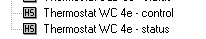
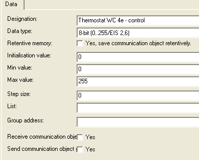
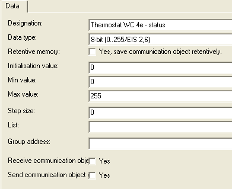
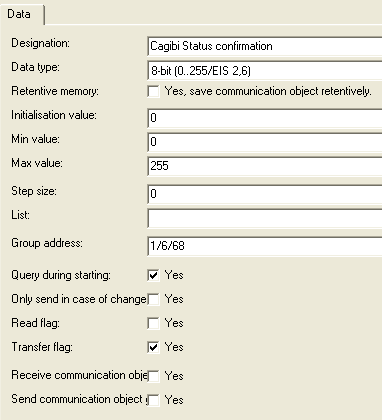
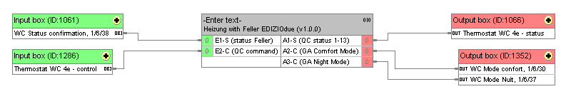
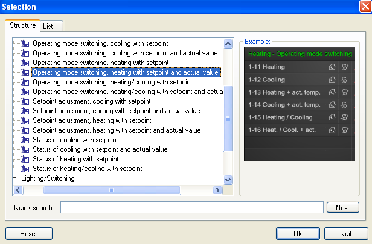
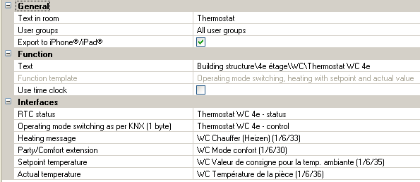

This logic handles the connection between a Feller EDIZIODue and the Gira HS QuadClient template 1-13. It handles the Standby, Comfort and Night modes. The Anti-freeze mode hasn’t been implemented as I think it is better handled from a central group address rather than from the QuadClient directly. Yet, such an extension would be trivial to make, feel free to send your modifications as pull requests on the git repository hosting the logic.
The logic uses timers to make sure it sends the state transition messages to Feller in the right order: sending them in a random order could generate visible transition glitches on the display.
Last but not least, since the mode numbers are not the same on the 1-13 template and on the Feller, this module handles the proper mapping.
This logic requires two internal communication objects to be created in Gira for each Feller that needs to be attached to the QuadControl. These objects will be used to i) display the proper status in the QC template (Status) and ii) to receive the QC control request (Control).
Then, the logic will consume and feed the following KNX Group Address:
(each of those object will have to be in a separate GA).
Create a Control and Status communication object for the Feller you want to control in QC:


IMPORTANT: Make sure to use a EIS 2.6 datatype (or similar), but not an RTC status type.
Go in Gira Expert and check the Feller Status Confirmation GA (this is the GA that gets updated by Feller whenever the mode gets changed):

You have to verify that i) the Data Type is set to EIS 2.6 (and not RTC Status) and that ii) the Query during starting is set to “Yes”.
Go in the logic editor, and wire the proper GA and internal GA properly:

IMPORTANT: Make sure to use TWO separate Input Boxes for the two Input: do not group the two GA in the same Input Box.
In GIRA Expert, go in the QuadConfig tool, and create a 1-13 template:

Then, feed the template with the proper GA and internal GA create previously:

And you should be all set!
This piece of logic is licensed under the LGPL. In summary: use it as much as you want (including commercially), but if you are going to modify it, provide the source code of your modifications so others can benefit from it.